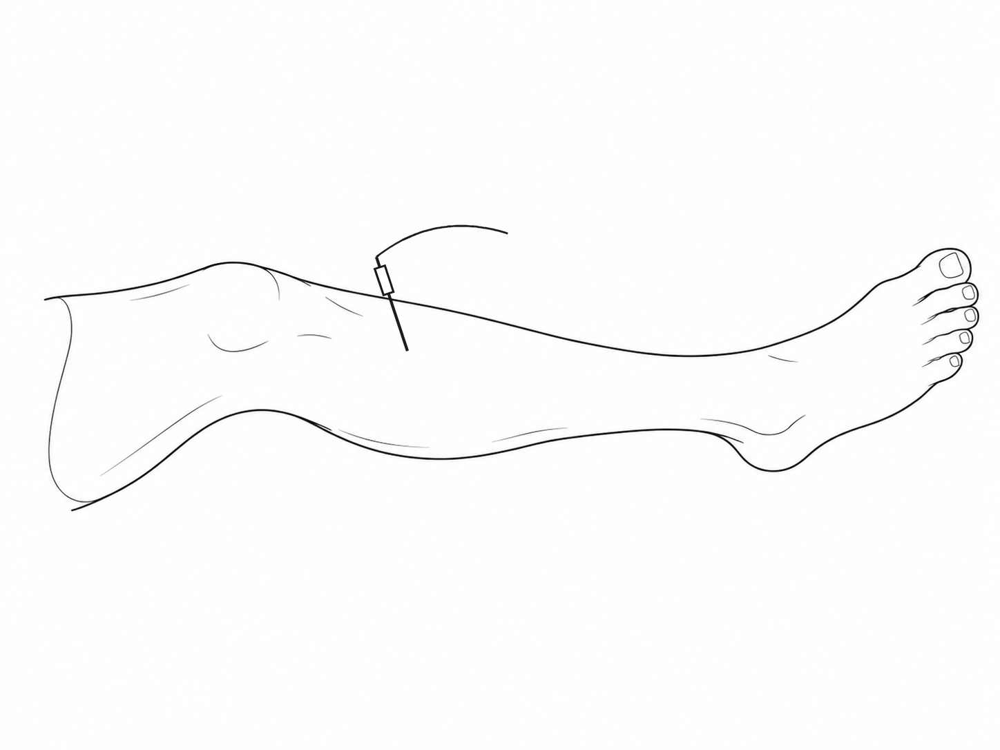
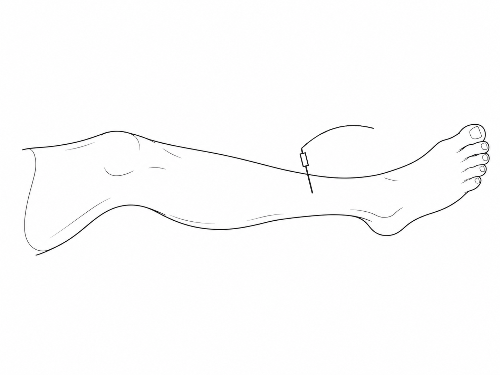
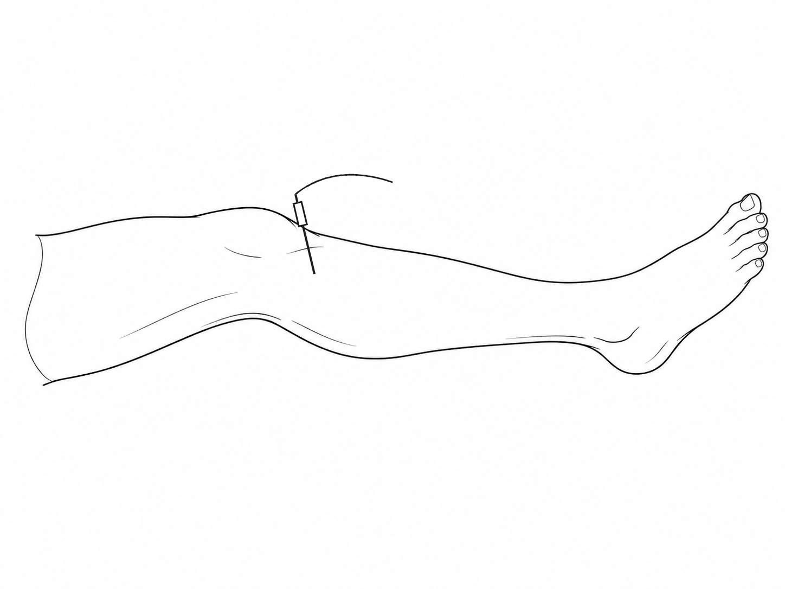

Figuras de referencia complementarias al capítulo de anatomía para electromiografía
Tibialis anterior · compartimento anterior

Pierna en extensión. Inserción en el tercio superior, un través de dedo lateral a la cresta tibial. Músculo superficial; la aguja entra casi perpendicular. Inervación: nervio peroneo profundo (L4–L5).
Extensor hallucis longus · compartimento anterior

Tercio medio-distal de la pierna, lateral a la cresta tibial, sobre el vientre que continúa como tendón hacia el primer dedo. Inervación: nervio peroneo profundo (L5–S1).
Peroneus longus · compartimento lateral

Vista lateral. Inserción en el tercio superior, sobre el peroné, uno o dos través de dedo por debajo de la cabeza del peroné. Inervación: nervio peroneo superficial (L5–S1).